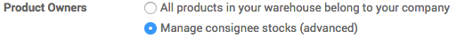

Introduction
Some suppliers can sometimes offer you to store and sell products without having to buy those items: this technique is called consignee stock.
Consignee stock is a great way for manufacturers and suppliers to launch new products. As resellers may be reluctant to buying a product that they are not sure to be able to sell, consignee stock will allow them to propose an item to check its market without having to pay for it in the first place.
Odoo has the ability to manage consignee stocks through the advanced settings.
Configuration
Open the menu , and in the Product Owners section, select Manage consignee stocks (advanced), then click on Apply.
Reception of Consignee Stock
In the Inventory's Dashboard, open the Receipts and create a new reception. You can see that in the right side of the page, a new Owner line has appeared. You can specify the partner which owns the stock or leave it blank if you are the owner.